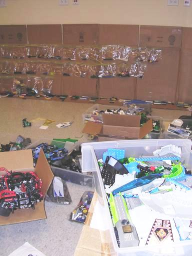

27 Stages of Lego Sorting
I've been spending a bit of time lately sorting legos. First, I am getting the middle school collection sorted out for the kick-off of First Lego League. For FLL the school has a collection of two full mindstorm kits plus three years of competition add-ons. This collection barely fits into 4 large tackle boxes (plano). At the same time, our group at work has inherited an extremely large lego collection, lots of mindstorms, scouts, really cool kits (that car is amazing!). We've been sorting this since the beginning of August. Well, I've been concentrating on the kits for school, while Tony and Willie have been doing the bulk of the work.
All this sorting has got me thinking if there's a better way to do this. Well, it turns out that someone has documented the 27 stages of lego sorting. I think I'm on stage 14 or 15. Sigh ...
Anyway, here's a shot of the sorting progress at work (Tony setup the baggy system).
